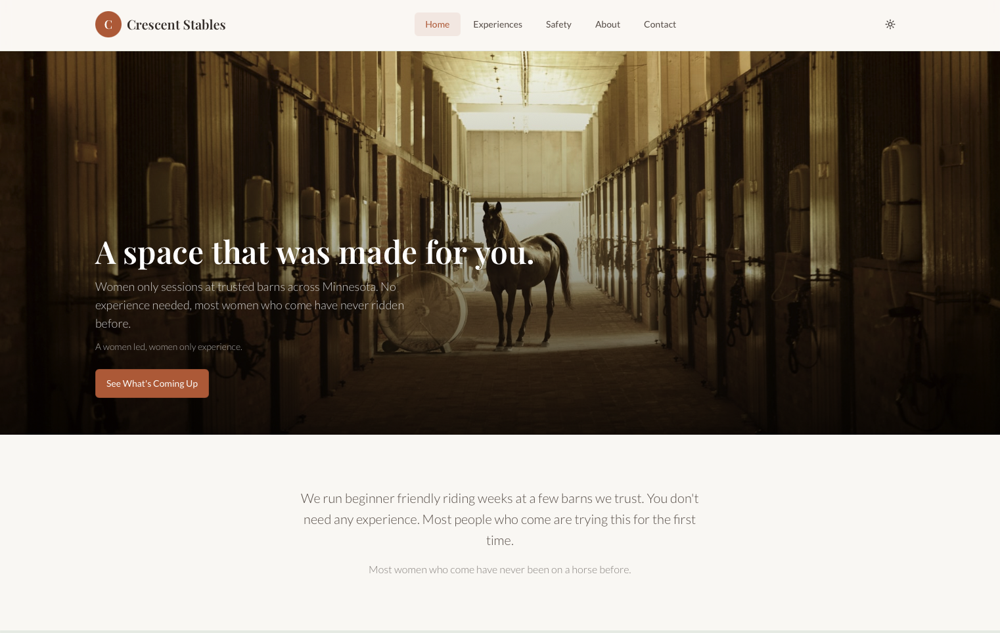
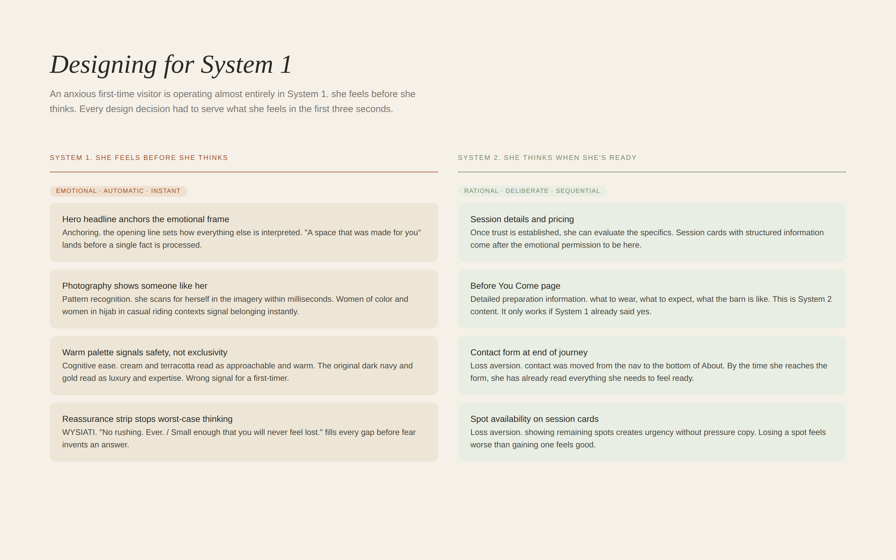
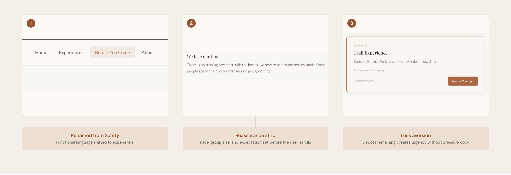
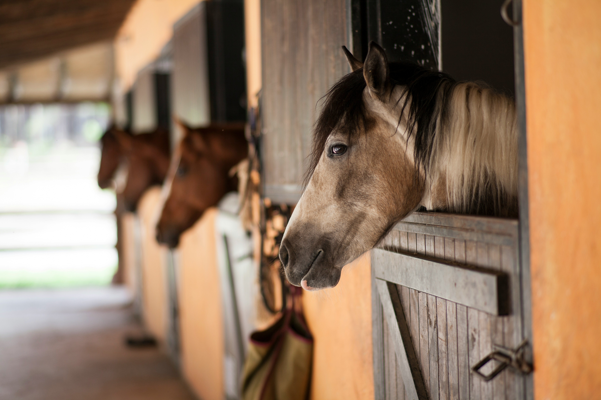
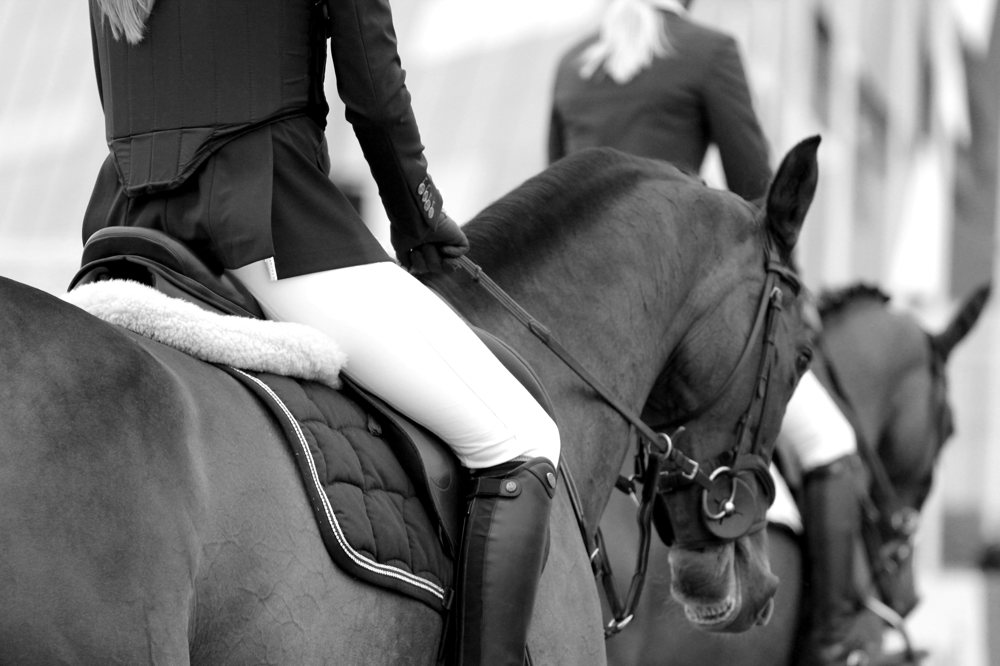
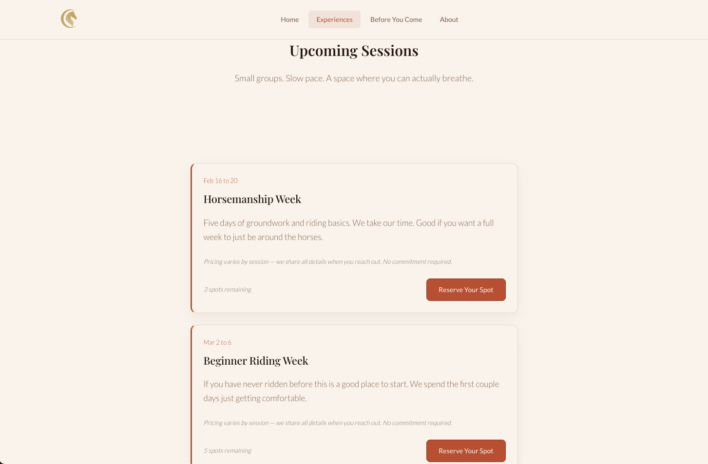
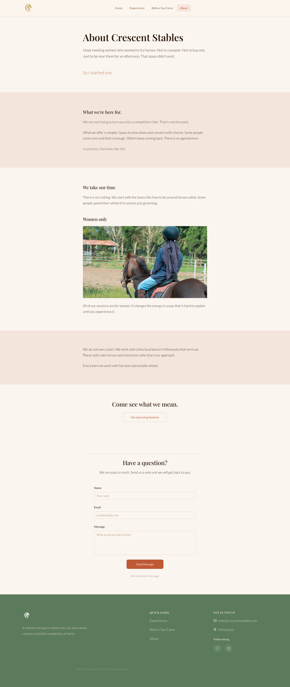

Crescent Stables
UX strategy, information architecture, and interaction design for an equestrian brand targeting adult first-time riders

Before. Dark navy and gold.

After. Warm cream and terracotta.
Crescent Stables is a women-led equestrian experiences brand in Minnesota targeting adult beginners. I served as lead designer, collaborating with the brand stakeholder throughout.
The target audience is specific. Adult women with little to no riding experience, motivated by curiosity but stopped by anxiety. Worried about safety, embarrassment, and not fitting in. One insight sharpened the entire design direction. Women from certain cultural and religious backgrounds face additional barriers to accessing equestrian spaces. The design could not just be welcoming in a general sense. It had to be specifically and visibly welcoming to the women who had the most reason to feel like this space was not for them.
Not information. Not a list of sessions and prices. A feeling that this place is for someone like her. That she won't look foolish, that someone thought about her specifically when they built this.
Most equestrian websites are built for people who already ride. They use insider language and assume prior knowledge. The existing site had the same problem. It answered functional questions before it answered emotional ones.
The site needed to answer three questions for every visitor, in this order: Is this for someone like me? Is it safe and structured? What do I do to get started?
I spoke with approximately 10 people to validate whether the emotional barriers I suspected were real. I asked about their perceptions of riding, whether they had ever considered trying it, and what would make them feel safe enough to take a first step.
I structured the entire redesign around Kahneman's System 1 and System 2 framework. An anxious first-time visitor is operating almost entirely in System 1. She feels before she thinks. Every design decision had to serve what she feels in the first three seconds before her rational mind engages.

System 1 vs System 2. Every design decision mapped to the emotional state it was designed to serve.
Anchoring shaped the hero. The opening headline sets the emotional frame before any information is processed. Everything the visitor reads afterward is interpreted through that first impression.
Loss aversion shaped the session cards. Showing spots remaining creates urgency without pressure copy. Losing a spot feels worse than gaining one feels good. WYSIATI shaped the Before You Come page. Anxious users fill information gaps with worst-case assumptions, so the page was designed to fill every possible gap proactively.
Cognitive ease shaped the visual design. Text contrast corrections, generous line height, calm hierarchy, and short paragraphs reduce cognitive load before the user consciously notices any of it.
The final site has four pages: Home, Experiences, Before You Come, and About. Two naming decisions are worth noting.
The Safety page was renamed Before You Come. That shift moves the label from functional to experiential. It signals preparation and welcome rather than liability and rules. Contact was removed from the navigation entirely and merged into the bottom of the About page. This places the inquiry moment at the end of the trust-building journey rather than in competition with it.
Four pages. Every naming decision made with the nervous beginner in mind, not how a barn organizes its business.
Three rounds of wireframes in Figma before any visual design. Round one established basic page structure and content hierarchy. Round two refined spacing, card layouts, and CTA placement. Round three used Figma AI to pressure-test layout assumptions as a tool to accelerate iteration, not to replace design thinking.
The wireframes locked in a consistent set of decisions across every page: large headlines at the top, CTAs placed after reassurance content rather than before it, card-based program layouts, consistent spacing to signal calm.
The visual direction is warm and unhurried. Generous white space, strong typography hierarchy, card-based layouts, and a restrained palette of warm cream, terracotta, and sage green. Pull quote treatments appear at emotional peak moments on each page.

Three decisions, each made intentionally. Naming, reassurance, and scarcity — all working before the user consciously notices.
Copywriting was treated as a design discipline with explicit constraints. No generic phrasing. No filler. No formal tone. Every sentence either reassures the visitor or moves her forward.
| Original copy | Rewritten copy |
|---|---|
| "Join us for a session" | "Whenever you are ready, we will be here." |
| "Safety information" | "Before You Come" |
| "Contact us" | Removed from nav, merged into About page |
| Generic facility photos | Women of color and women in hijab in casual riding contexts |
Photography was shifted from facility shots to human-centered connection imagery. The images selected show women of color and women in hijab in casual, non-competitive riding contexts. This was a UX decision, not a visual one.
The inclusion approach was attraction-based. The goal was to make the target audience feel so seen and centered that the space clearly belongs to them. Without policy language that could feel defensive or performative.

Formal competition context. Sends a signal of expertise before the user reads a single word.

Appealing but impersonal. No human presence, no one to identify with.

Authentic, but not inviting. Activates uncertainty rather than curiosity.
Moody and insider. Signals a world with its own codes that you need to already know.
Beautiful light, empty frame. No person to identify with, no answer to: is this for me?
Every photo sends a signal before the brain engages the text. The original images signaled: this is a serious equestrian world and you need to already belong here.
The redesign centers women who look like the actual audience. Casual clothes. Real moments. The inclusion work happens before a word is read. This is the WYSIATI principle applied visually: if someone does not see themselves, they will not imagine themselves in the experience.
The live homepage hero. A Black woman on horseback in a puffer vest and jeans. The body language reads joy, not performance.
The first version of the site was dark navy and gold. It looked expensive. It looked like a luxury equestrian brand for people who already rode. That was the problem.
The client shared something that reframed the entire project. At their pop-up events, the people approaching them were mostly men. But the experience they were building was specifically for women who had never ridden. Women who felt excluded from traditional equestrian spaces. The site was attracting exactly the wrong audience and repelling exactly the right one.
I went back to the research. What makes a space feel like it was built for you versus built for someone else? The answer came from color psychology and inclusion design. Warm, organic tones signal approachability and safety. Cool, dark palettes with gold signal exclusivity and expertise. The site needed to feel like an invitation, not a velvet rope.
The photography had the same problem. The original image choices were stock-looking. Horses without riders, animals without people, nothing that showed a real human having a real experience. The client felt they looked unnatural. More importantly they showed no one who looked like the target audience. A nervous first-time rider looking at those images would not see herself in them.
Both pivots, the color palette and the photography strategy, came from the same insight: design is not neutral. Every visual choice either includes someone or excludes them. The warm cream and terracotta palette and the human-centered photography were not aesthetic preferences. They were inclusion decisions.
Before. Navy and gold reads luxury and expertise.
After. Cream and terracotta reads warmth and welcome. Same brand, opposite signals.
A deployed Netlify prototype and a production Squarespace site handed off to the client. The prototype is publicly accessible at crescent-stables.netlify.app.
The Netlify build was user-tested with two first-generation adult beginners before handoff. Both testers said the same thing: it felt like it was written for them.
Home. Leads with belonging before anything else. Three short phrases below the hero spell out the pace, the group, and the expectation before the user scrolls.

Experiences. Sessions listed chronologically with spots remaining visible. Scarcity is shown, not announced. Anchoring nudges action without pressure copy.
Before You Come. Renamed from Safety. Safety language centers risk. Preparation language centers readiness. The rename changes what the user imagines when they click.

About. Contact moved here from the main nav. It now appears at the end of the founder's story, when trust is highest and the decision to reach out feels natural.
Writing is a design decision. Removing generic phrasing had more impact on trust than any layout change. The difference between "Join us for a session" and "Whenever you are ready, we will be here" is the difference between transactional and human.
Structure is empathy. Organizing a site around how a nervous beginner thinks separates a site that builds trust from one that overwhelms.
Shipping changes how you design. Working through real deployment issues deepened my understanding of how design decisions translate into technical constraints. It made me more precise, not less creative.
Why this matters beyond equestrian. Shopify exists to make commerce better for everyone. Including first-time business owners who feel anxious, underqualified, and unsure where to start. The design problem in Crescent Stables is structurally the same: how do you make someone who has never done this before feel like this space was built specifically for them? That question is one I want to keep answering.